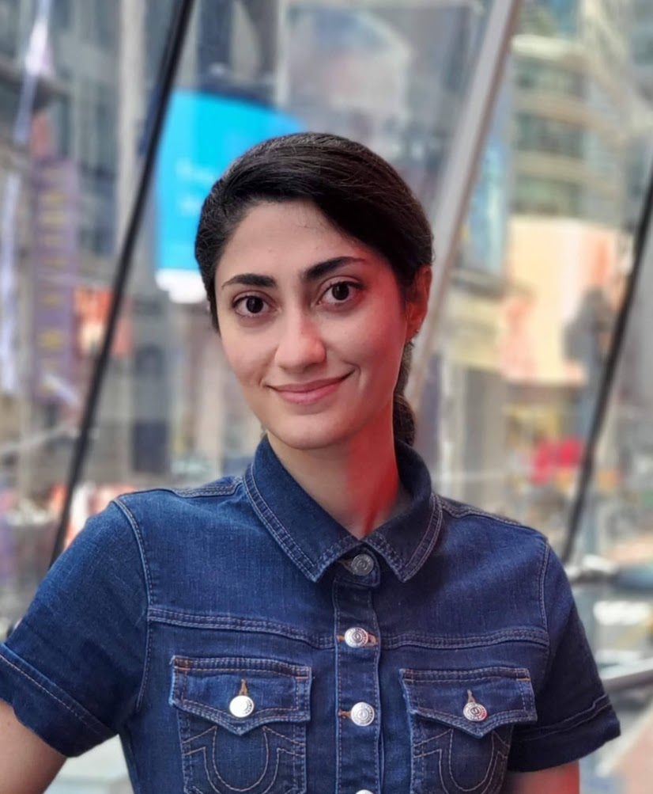

Research Scientist · AI & Human-Machine Interaction
I work at the intersection of artificial intelligence and human experience. At Meta, I design and evaluate agentic AI workflows and novel interaction paradigms for AR/VR wearables. My work spans LLM-powered systems, gaze and gesture interfaces, and the accessibility of emerging technologies — always with real people at the center.

Work
Publications
Full list on Google Scholar.
Background
Expertise
Research Areas
Technical
Honors
Let's Connect
I'm always open to discussing research collaborations, speaking opportunities, or ideas at the frontier of AI and human-computer interaction. Feel free to reach out.